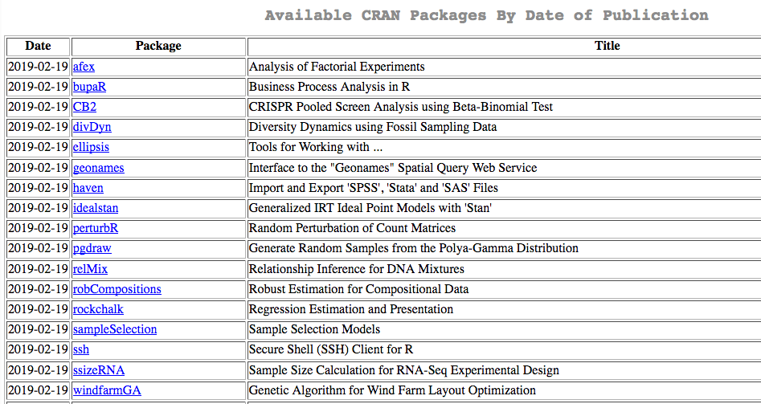
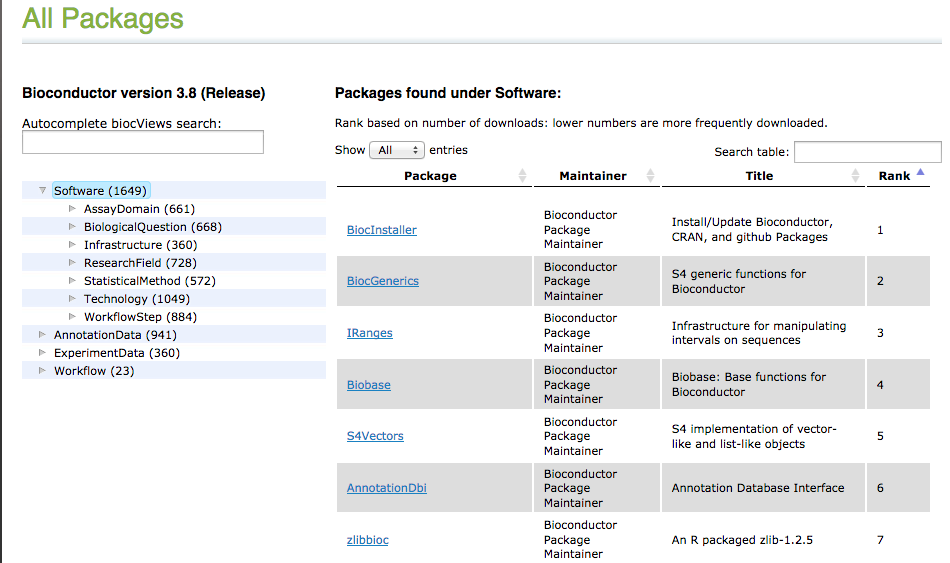

12.2 R contrib
All other packages:
- CRAN: Comprehensive R Archive Network
- 13735* packages available
- find packages in https://cran.r-project.org/web/packages/ 
- Bioconductor:
- 1649* packages available
- find packages in https://bioconductor.org/packages 
As of February 2019*
Bioconductor
Set of R packages specialized in the analysis of bioinformatics data.
Bioconductor supports most types of genomics and NGS data (e.g. limma, DESeq2, BayesPeak) and integrates: * Specific data classes (e.g. Granges from GenomicRanges) * Integrates command line tools (e.g Rsamtools) * Annotation tools (e.g. biomaRt)
There are different types of Bioconductor packages: * Software: set of functions + e.g. DESeq2 (NGS data analysis) * Annotation: annotation of specific arrays, organisms, events, etc. + e.g. BSgenome.Hsapiens.UCSC.hg38 * Experiment: data that can be loaded and used + e.g. ALL (acute lymphoblastic leukemia dataset)